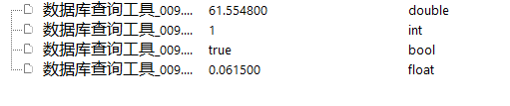
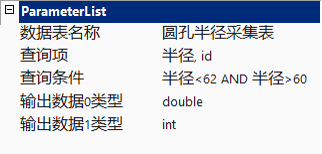

对已经连接的数据库里面的表进行查询，查找期望的值，只能输出一条记录。如图1所示。

| 分类 | 参数名称 | 参数描述 |
|---|---|---|
| 属性窗口 | 数据表名称 | 需要查询的数据表的名称（前提是需要连接到表所在的数据库） |
| 查询项 | 需要查询的列的名称 | |
| 查询条件 | 满足查询条件的逻辑表达式（多条件使用and、or或者()）。比如：半径>60 AND半径<65，或者稍复杂的：列名1= ‘Aa’ and 列名2= ‘Bb ’ and (列名3 = 888 or 列名4 = 888 ) | |
| 输出数据0类型 | 数据类型double、int等12种类型 | |
| 图像窗口 | 无 | 无 |
| 数据链 | 无 | 无 |
| 高级界面 | 无 | 无 |
| 分类 | 参数名称 | 参数描述 |
|---|---|---|
| 监视窗口 | 输出数据0 | 查询结果显示 |
| 执行结果 | 工具执行结果。 | |
| 执行时间 | 工具执行时间。 | |
| 图像窗口 | 无 | 无 |
| 数据链 | 无 | 无 |
执行查询的时候要保证数据表名称和查询项都是存在的，否则数据库会报错。在查询之前可以检查数据库里面表的名称和列的名称，做到拼写正确，尽量与表的名称和列名大小写拼写一致。
查询的结果可以显示多列，但是只可以输出一条记录，如果存在多条记录，还是会报错的。
关于多查询项和多条件查询的案例。
如何显示多列，需要在查询项出列名与列名使用逗号隔开，最后一个列名不需要加逗号。注意必须是英文的逗号，中文的逗号数据库会不认识。
关于多条件查询可以使用“and”和“or”和“( )”，注意这些都是英文环境下的符号。其中，“and”和“or”不区分大小写。见图2，多查询项和多条件查询。图3，多查询项和多条件查询结果显示。

在设置输出数据（0-15）类型的时候，要与查询项的对应列名称的数据类型保持一致，这样，不会造成结果解析的困惑和输出不是想要的结果。
参见“\Samples\数据库相关工具.gvp”。